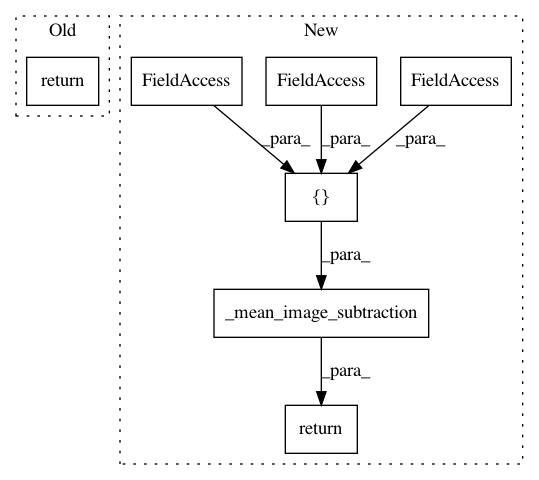

2f8658fbb6e0a545f18618b6238936280f80382c,cloud_tpu/models/resnet_garden/vgg_preprocessing.py,,preprocess_for_eval,#Any#Any#Any#Any#,313
Before Change
image = _central_crop([image], output_height, output_width)[0]
image.set_shape([output_height, output_width, 3])
image = tf.to_float(image)
return tf.image.per_image_standardization(image)
def preprocess_image(image, output_height, output_width, is_training=False,
resize_side_min=_RESIZE_SIDE_MIN,
After Change
image = _central_crop([image], output_height, output_width)[0]
image.set_shape([output_height, output_width, 3])
image = tf.to_float(image)
return _mean_image_subtraction(image, [_R_MEAN, _G_MEAN, _B_MEAN])
def preprocess_image(image, output_height, output_width, is_training=False,
resize_side_min=_RESIZE_SIDE_MIN,
In pattern: SUPERPATTERN
Frequency: 3
Non-data size: 7
Instances
Project Name: tensorflow/tpu
Commit Name: 2f8658fbb6e0a545f18618b6238936280f80382c
Time: 2017-10-02
Author: frankchn@google.com
File Name: cloud_tpu/models/resnet_garden/vgg_preprocessing.py
Class Name:
Method Name: preprocess_for_eval
Project Name: tensorflow/models
Commit Name: 9a30bb661ffbf93d095c48d2ba7971f88c10eb38
Time: 2018-02-16
Author: karmel@arcaio.com
File Name: official/resnet/vgg_preprocessing.py
Class Name:
Method Name: preprocess_image
Project Name: tensorflow/tpu
Commit Name: 2f8658fbb6e0a545f18618b6238936280f80382c
Time: 2017-10-02
Author: frankchn@google.com
File Name: cloud_tpu/models/resnet_garden/vgg_preprocessing.py
Class Name:
Method Name: preprocess_for_train